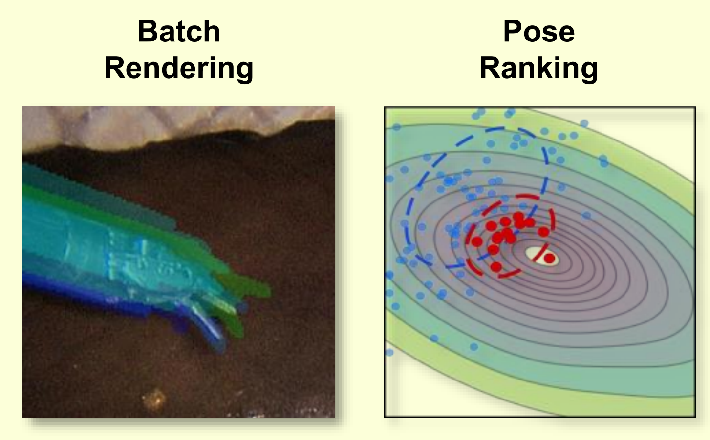

I'm a PhD student at the University of California, San Diego, advised by Prof. Michael Yip.
Prior to that, I received my M.S. in Electrical and Computer Engineering from UCSD.
My research lies at the intersection of surgical robotics and computer vision, with a focus on robot learning, state estimation, and 3D reconstruction. I develop algorithms and systems that help robots better perceive and understand surgical scenes, with the goal of making surgery safer and improving patient outcomes. In particular, I am interested in integrating accurate visual perception with robot learning to enable safer and more efficient acquisition of surgical skills. I also explore how general-purpose robots can be integrated into surgical workflows to make high-quality healthcare more accessible to broader populations.
Outside of research, I enjoy sugar-free cooking, films, mixed martial arts, and outdoor activities.
Publications
In vivo feasibility study of humanoid robots in surgery Zekai Liang, Nikita Thareja, Peihan Zhang, Calvin Joyce, Soofiyan Atar, Florian Richter, Garth Jacobsen, Shanglei Liu, Ryan Broderick, Michael Yip
Nature, 2026
[paper][website][video]

Real-time Rendering-based Surgical Instrument Tracking via Evolutionary Optimization
Hanyang Hu, Zekai Liang, Florian Richter, Michael C Yip
IEEE/RSJ International Conference on Intelligent Robots and Systems (IROS), 2026
[paper]
Efficient Surgical Robotic Instrument Pose Reconstruction in Real World Conditions Using Unified Feature Detection Zekai Liang, Kazuya Miyata, Xiao Liang, Florian Richter, Michael C Yip
IEEE/RSJ International Conference on Intelligent Robots and Systems (IROS), 2026
[paper]
LapSurgie: Humanoid Robots Performing Surgery via Teleoperated Handheld Laparoscopy Zekai Liang, Xiao Liang, Soofiyan Atar, Sreyan Das, Zoe Chiu, Peihan Zhang, Florian Richter, Shanglei Liu, Michael C Yip
IEEE International Conference on Robotics and Automation (ICRA), 2026
[paper]
BASED: Bundle-Adjusting Surgical Endoscopic Dynamic Video Reconstruction using Neural Radiance Fields
Shreya Saha, Zekai Liang, Shan Lin, Jingpei Lu, Michael Yip, Sainan Liu
IEEE/CVF Winter Conference on Applications of Computer Vision (WACV), 2025
[paper]
Differentiable rendering-based pose estimation for surgical robotic instruments Zekai Liang, Zih-Yun Chiu, Florian Richter, Michael C Yip
IEEE/RSJ International Conference on Intelligent Robots and Systems (IROS), 2025
[paper]
CtRNet-X: Camera-to-Robot Pose Estimation in Real-world Conditions Using a Single Camera
Jingpei Lu*, Zekai Liang*, Tristin Xie, Florian Richter, Shan Lin, Sainan Liu, Michael C Yip
IEEE International Conference on Robotics and Automation (ICRA), 2025
[paper]